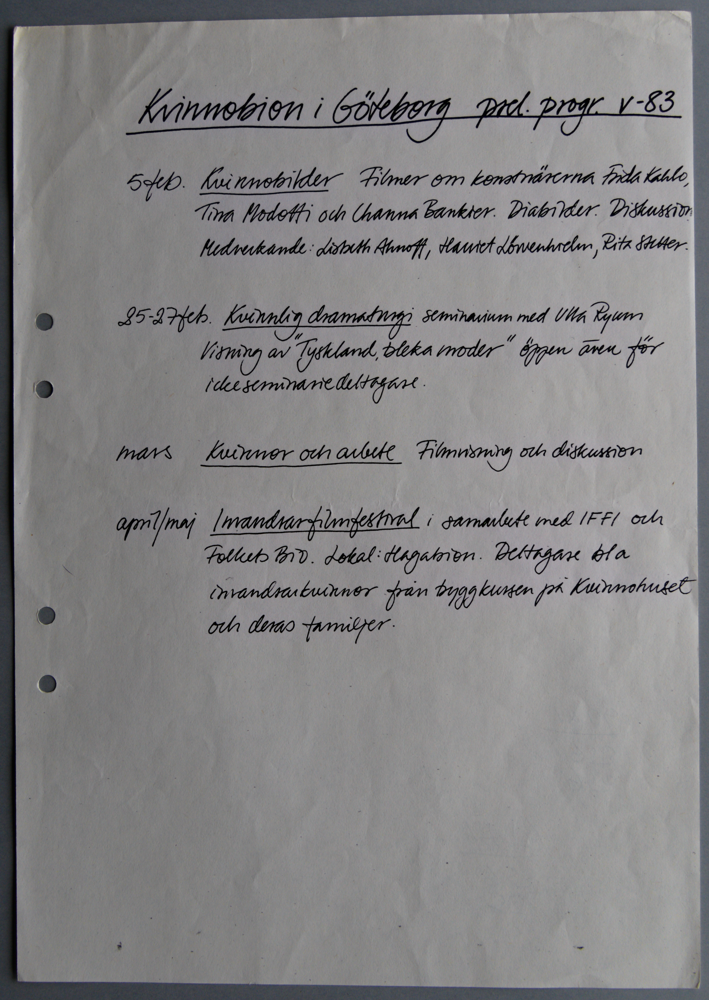
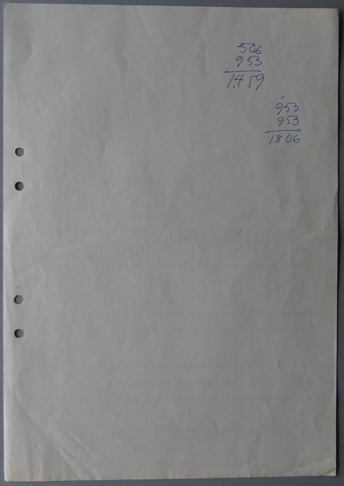

Digitiserad version av preliminärt programblad från
Kvinnobion våren år 1983
Faksimil
Transkription
5feb. Kvinnobilder Filmer om konstnärerna Frida Kahlo,
Tina Modotti och Channa Bankier. Diabilder. Diskussion.
Medverkande: Lisbeth Ahnoff, Harriet Lövenhielm, Rita Stetter.
25-27 feb. Kvinnlig dramaturgi Seminarium med Ulla Ryman
Visning av "Tyskland, bleka moder" öppen även för
ickeseminariedeltagare.
mars Kvinnor och arbete
Filmvisning och diskussion
april/maj Invandrarfilmfestival
i samarbete med IFFI och
Folkets Bio. Lokal: Hagabion.
Deltagare bla
invandrarkvinnor från byggkursen på Kvinnohuset
och deras familjer.
Faksimil

Transkription
506
953
1.459
1
953
953
1.806
1.906